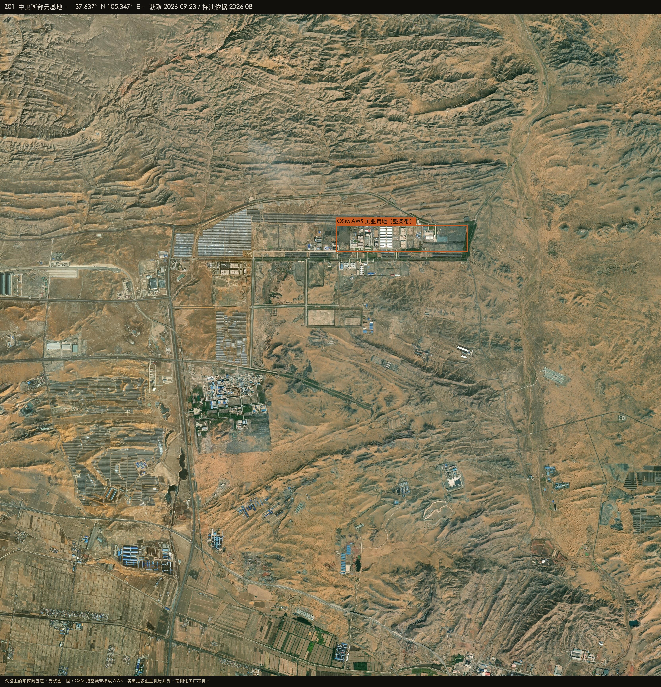
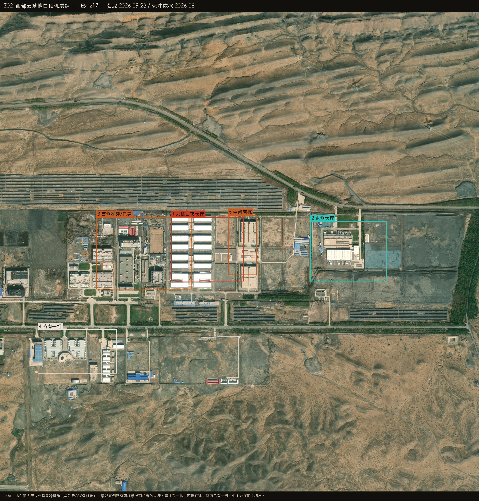

Datacenter Probe · 中卫
37.6368°N 105.3468°E · r = 50 km
Esri World Imagery · 2026-08-27
Satellite reconnaissance · Ningxia
中卫周边数据中心建设情况
中卫的机房不在沙坡头城区，而在北面戈壁上的西部云基地。Esri 图上是一条东西向、光伏夹着的园区：六栋白顶大厅并排是主体，紧邻东侧两栋带屋顶机电，再往东一栋，西侧在建，路南另有一组；东端还有整平垫层空着。OSM 把整条带写成 AWS，实际上美利云和三大运营商也在同一个园。

HERO · 西部云基地 · OSM 标注为 AWS 的整条工业用地
在建 / 高置信机房
已投运 / OSM 具名
候选 / 业主待核
排除或不像机房
底图 Esri World Imagery（WGS84）
Z-HALLS · 六栋白顶
并排白顶大厅 + 冷机，典型风冷机房。业主未逐栋标出。
高 · 是机房
Z-EAST · 东侧三栋
六栋东邻两栋带屋顶机电，再往东一栋独立大厅，旁边整平垫层。
高 · 已建+垫层
Z-WEST · 续建
西侧有塔吊、部分封顶；路南一组带圆池和条状机房。符合续建报道。
中高 · 在建
排除 · 化工厂
储罐管廊，不是机房。
排除
37.6372°N 105.3445°E
西部云基地
中卫工业园凤云路一带。OSM 名称 Amazon Web Services China (Ningxia) Data Centre，多边形宽约 2.5 km，覆盖整园。
高置信 · 机房形态 / 中 · 业主
- 六栋白顶大厅是影像上最像美利云/AWS 风冷机房的一组
- 东邻两栋、再东一栋都带屋顶机电，同一园区连片
- 东端垫层说明还在扩
- 迎水桥、寺口子分园在 50 km 圈内，本次未出特写
AWS？美利云？移动/联通/电信？天云？
在 Google 卫星图打开 ↗

PLATE Z02 · 白顶机房组 · Esri z17
PLATE Z01 · 总图 · 光伏围着园区
怎么判，什么不算
圆心不在中卫城区，在城北戈壁。南侧化工厂容易被 OSM 工业用地带进来，必须看储罐。
算作机房
- 戈壁上超大白顶无内院矩形、模块化并排
- 旁边光伏可以当配套，本身不是机房
明确排除
- 储罐、管廊、排烟
- 城区政府办公楼（云计算大数据发展局）
在 Google 卫星图打开圆心 ↗